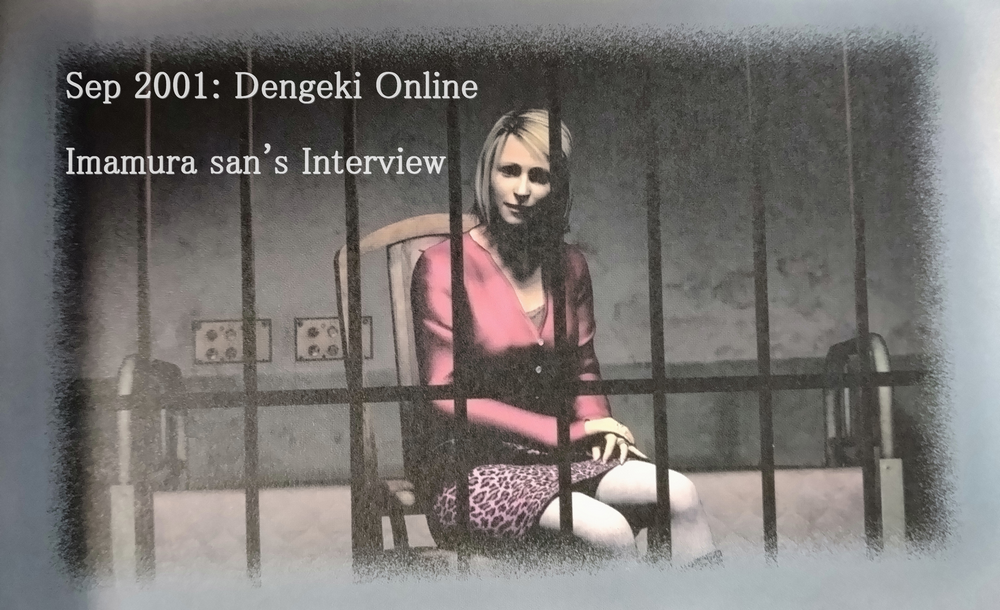
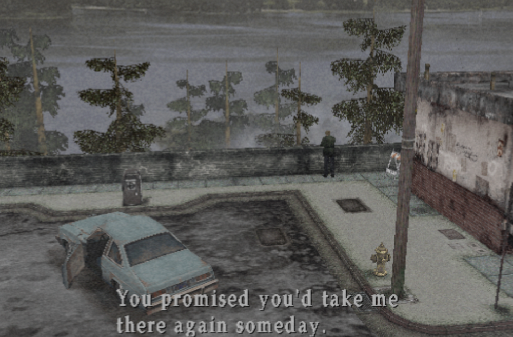
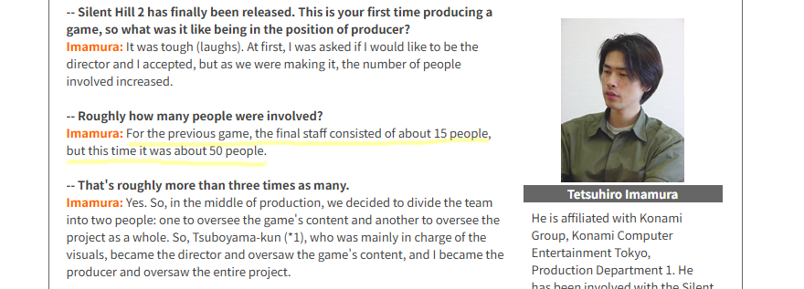
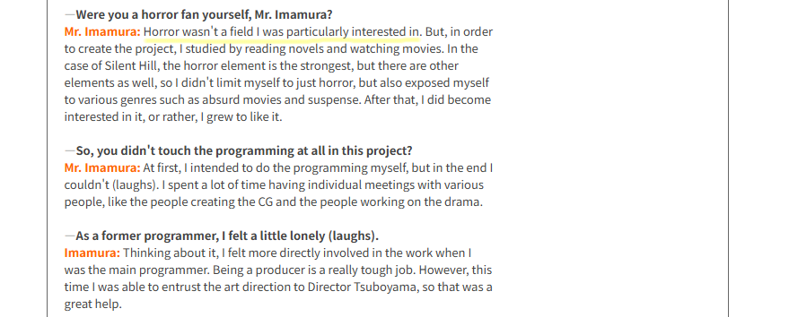
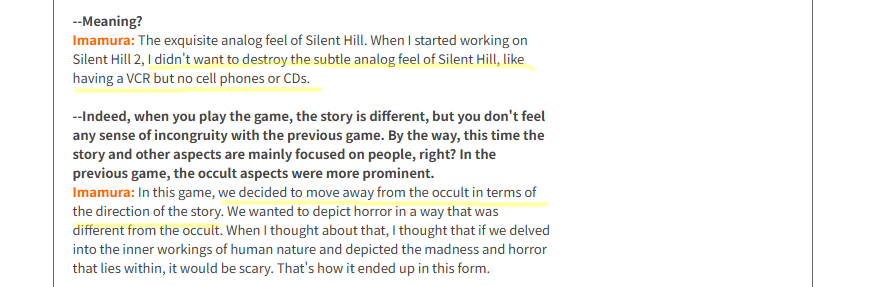
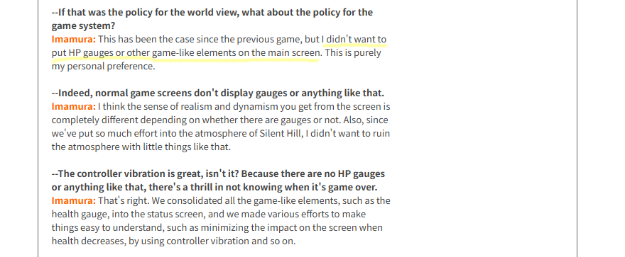
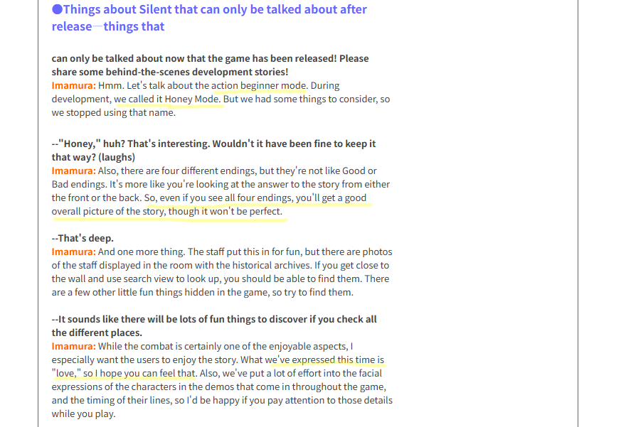
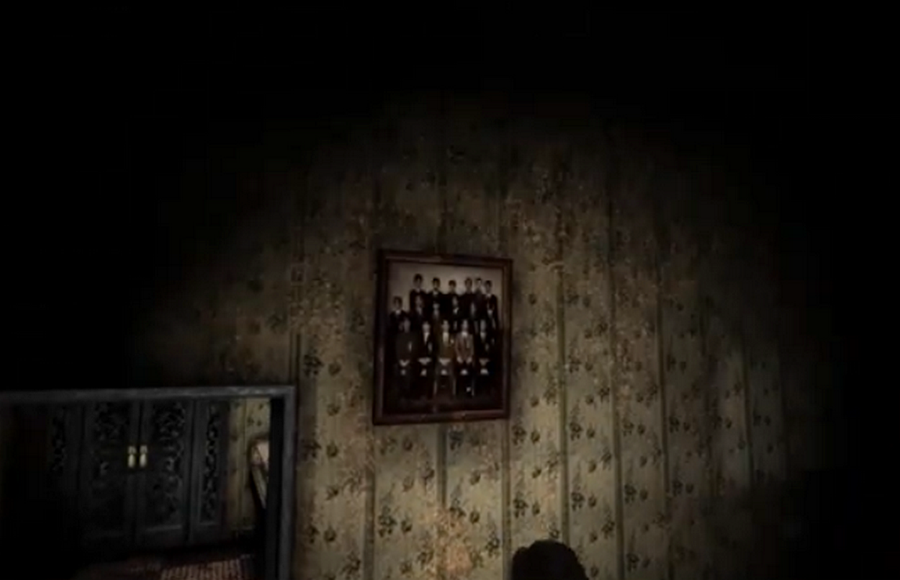
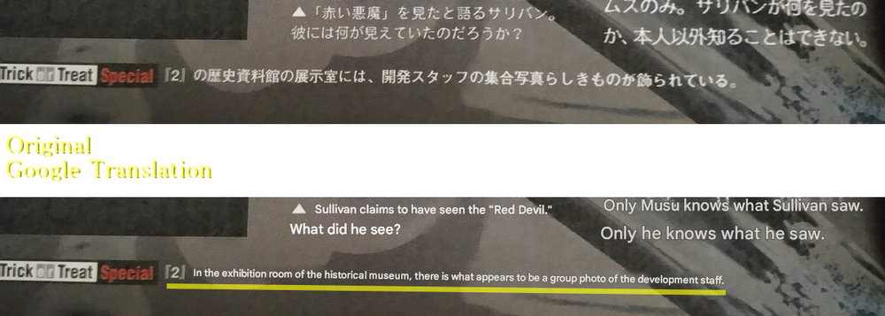
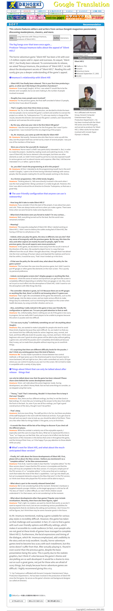

[SH2] Honey Mode and Love as What They Expressed

Dengeki Online "Silent Hill 2" producer Akihiro Imamura's long interview
This is a mirror of the DeviantArt version linked above, provided as a backup and for easier access.


This time, I've dug up a 25-year-old interview with Imamura-san about the behind-the-scenes making of SH2.
When the SH2 remake was released, what shocked longtime fans the most was seeing a certain new player say, "I wasn't even born when the original came out," lol. There might be people reading this who weren't born when this interview took place, either. (I was already around, though!)
🌐電撃オンライン『サイレントヒル2』プロデューサー今村哲裕氏ロングインタビュー
Dengeki Online "Silent Hill 2" producer Akihiro Imamura's long interview. After Sep 2001
https://web.archive.org/web/20040625192318/http://www.dengekionline.com/soft/recommend/rec_silenthill2.htm
This interview has some interesting parts, like how he wasn't really into horror. It might cover stuff that wasn't in overseas interviews, so definitely try reading it through a translator. As usual, Google Translate tends to mess up the names or make "Mr." appear and disappear randomly.
✅ Quote: For the previous game, the final staff consisted of about 15 people, but this time it was about 50.

Looking back from today's perspective, it's actually surprising that the first game was made by only 15 people.
✅ Quote: Horror wasn't a field I was particularly interested in.

In Japanese, "it wasn't a field I was particularly interested in" basically means "he didn't like it very much," right? Haha. That, incorporating various elements and becoming that story in SH2, is wonderful!
✅ Quote: The exquisite analog feel of Silent Hill. When I started working on Silent Hill 2, I didn't want to destroy the subtle analog feel of Silent Hill, like having a VCR but no cell phones or CDs.

This part shows the dedication to the world-building. It’s why fans still research the small props and appliances in the game to piece together its history.
✅ Quote: This has been the case since the previous game, but I didn't want to put HP gauges or other game-like elements on the main screen.

Me SH4 fan: "………………"
Haha. To be fair, he was also the sub-producer for SH4. Well, opinions change over time.
In SH2, I've heard that overseas there were many requests to be able to see damage visually. In the remake, the screen turning red is the default display, right? You could turn it off in the settings, though.
✅ Quote: Hmm. Let's talk about the action beginner mode. During development, we called it Honey Mode.

He also talks about calling Beginner Mode "Honey Mode," the endings, and various "playful" elements added by the staff. I'm sure many fans had already found the photo he mentions.
This photo of the devs is also mentioned in the SH3 guide book.

Silent Hill 3 Official Complete Strategy Guide "The Lost Memories Silent Hill Chronicle," p251

And did you all feel the love in SH2? Of Course!
Come to think of it, in Yamaoka-san's interview about SH3, he also said the theme was a "love adventure." I guess love really is the theme for all of them.
